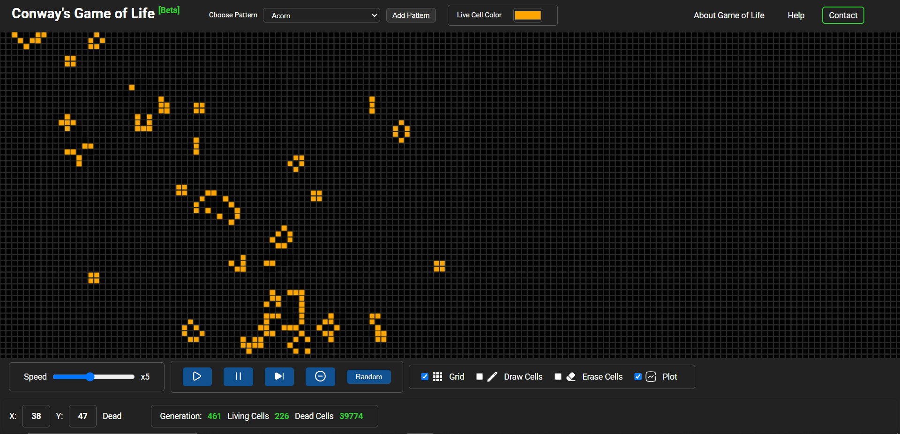
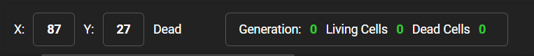
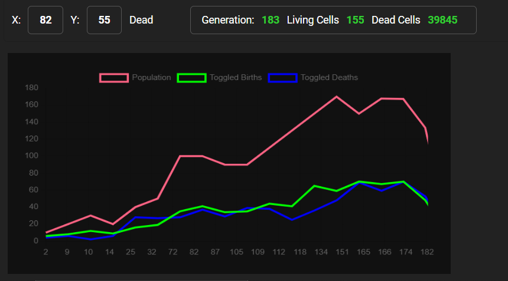

How to use the Simulation

Conway's Game of Life is a cellular automaton devised by the British
mathematician John Horton Conway in 1970. It is a zero-player game,
meaning that its evolution is determined by its initial state, requiring
no further input. One interacts with the Game of Life by creating an
initial configuration and observing how it evolves.
Rules
The universe of the Game of Life is an infinite, two-dimensional
orthogonal grid of square cells, each of which is in one of two possible
states, live or dead. Every cell interacts with its eight neighbours,
which are the cells that are horizontally, vertically, or diagonally
adjacent. At each step in time, the following transitions occur:
-
Any live cell with fewer than two live neighbours dies, as if by
underpopulation.
-
Any live cell with two or three live neighbours lives on to the next
generation.
-
Any live cell with more than three live neighbours dies, as if by
overpopulation.
-
Any dead cell with exactly three live neighbours becomes a live cell,
as if by reproduction.
Controls
- Start - Start the simulation.
- Stop - Stop the simulation.
- Clear - Clear the grid.
- Random - Fill the grid with random cells.
- Speed - Change the speed of the simulation.
- Color - Change the color of the live cells.
- Choose Pattern - Choose a predefined pattern.
-
Add Pattern - Add a new pattern (not yet support)
Inputs
- Grid - Show/Hide game's grid world
-
Draw Cells - Add more living cells to the game by
clicking in the canvas or dragging in the canvas
-
Erase Cells - Remove living cells of the game by
clicking on them or dragging on them
-
Plot - Show the informations about game evolution
like population, toggle deaths, toggle births
Info Panel

-
X label - show X coordinate of the grid world in real
time
-
Y label - show Y coordinate of the grid world in real
time
-
Status label - show whether the current cell is live
or dead
-
Generation label - show how many generations are
evolved in the game's simulation.
-
Living Cell label - Show current number of living
cell in the game's simulation
-
Dead Cell label - Show current number of dead cells
in the game's simulation
